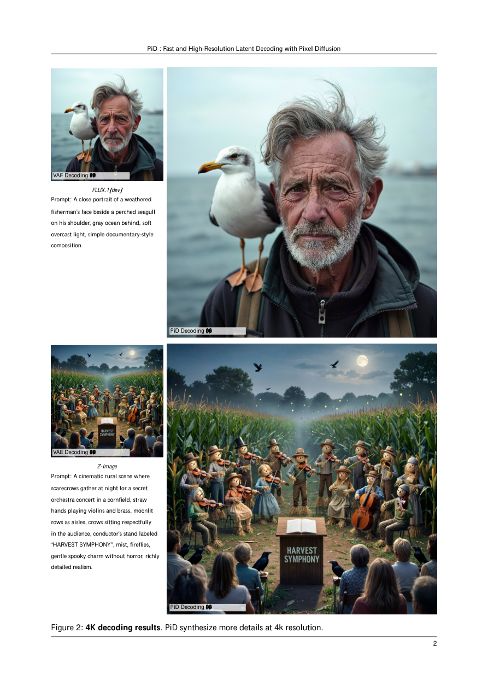

#1
★ 8/10
PiD: Fast and High-Resolution Latent Decoding with Pixel Diffusion
PiD：基于像素扩散的快速高分辨率潜变量解码

图 Figure · Page 2 of paper
🎯 用像素扩散替代传统解码器，一步实现超清图像生成
A pixel diffusion decoder that replaces traditional latent decoders for faster, sharper high-res image generation.
🗣️ 一句话比喻 · Plain-English Analogy就像洗胶卷照片时，传统方法只是"冲洗"出你拍的东西，而PiD就像一位艺术家——他不只是冲洗，还会在暗房里把照片细节一笔笔补全，直接帮你输出一张放大版的精致作品。Think of it like developing a photo in a darkroom: the old decoder just prints what's on the film — blurry if you zoom in. PiD is like having a skilled artist in that darkroom who doesn't just print the photo, but also paints in all the fine details as it's being enlarged, giving you a crystal-clear masterpiece instead.
| 维度 | 中文 | English |
|---|---|---|
| ❓ 待解决 的问题 |
现有的AI文字生成图像系统（比如Stable Diffusion）通常分两步：先在一个"压缩空间"里生成图像轮廓，再用一个解码器把轮廓还原成真实像素。但这个解码器只是"照着压缩图还原"，没有创造力，生成超大图片时又慢又耗内存，细节也不够丰富，就像用低画质截图放大打印一样模糊。 | Most AI image generators work in two steps: first create a rough "compressed sketch" of the image, then use a decoder to turn it into real pixels. The problem is that this decoder just tries to "undo the compression" — it doesn't add new details, and at very high resolutions it becomes slow and memory-hungry. The results often look soft or lack fine texture, like zooming into a blurry photo. |
| 💡 解决 的亮点 |
• 把解码和超分辨率合并成一个步骤：PiD用像素扩散模型同时完成"还原压缩图"和"放大图像"两件事，一步到位。 • 轻量级噪声感知适配器：设计了一个小模块，让像素扩散模型能理解生成过程中尚未完全去噪的中间状态，从而提前"接管"生成流程、节省时间。 • 极速推理+知识蒸馏：通过DMD2蒸馏技术，将推理步数压缩到仅4步，在消费级显卡（RTX 5090）上1秒内就能把512×512图像放大到2048×2048。 | • Decoding + upsampling unified: PiD merges what used to be two separate steps (decode + enlarge) into one generative module, saving time and adding rich detail. • Sigma-aware lightweight adapter: A clever small add-on lets PiD "plug into" the image generation process early — before it's fully finished — to take over and finish the job faster. • 4-step distilled inference: Using a technique called DMD2 distillation, PiD only needs 4 denoising steps, making it dramatically faster than traditional approaches without losing quality. |
| 🧪 实验 内容 |
研究者在标准文本生成图像基准上测试PiD，基线对比包括传统VAE解码器、级联扩散超分辨率流程（如SD-Upscaler）等方法。评估指标涵盖图像质量（FID、PSNR、SSIM）、感知相似度（LPIPS）、视觉保真度，以及推理速度和显存占用。实验分别在消费级显卡（RTX 5090）和专业GPU（GB200）上进行，同时验证了对VAE潜变量和语义潜变量（SigLIP、DINOv2）两类场景的适用性。 | The researchers tested PiD on standard text-to-image benchmarks, comparing it against traditional VAE decoders and cascaded diffusion super-resolution pipelines (like SD-Upscaler). They measured image quality (FID, PSNR, SSIM), perceptual similarity (LPIPS), visual fidelity, plus inference speed and memory usage. Tests were run on a consumer RTX 5090 and a high-end GB200 GPU, covering both conventional VAE latents and semantic latent spaces (SigLIP, DINOv2). |
| 📊 实验 结果 |
• 速度：在RTX 5090上将512×512潜变量解码为2048×2048图像仅需不到1秒（13 GB显存），在GB200上最快仅需210毫秒。 • 与级联扩散超分辨率流程相比，速度提升约6倍，同时视觉保真度更优。 • 蒸馏后的4步版本相比多步基线在保持图像质量的同时大幅降低推理延迟。 • 支持4×和8×超分辨率放大，适配多种潜变量类型（VAE、SigLIP、DINOv2）。 | • Speed: Decodes 512×512 latents to 2048×2048 pixels in under 1 second (13 GB memory) on an RTX 5090, and as fast as 210 ms on an NVIDIA GB200 GPU. • About 6× faster than cascaded diffusion-based super-resolution pipelines, with better visual fidelity. • The 4-step distilled model maintains high image quality while dramatically cutting inference time versus multi-step baselines. • Supports 4× and 8× upscaling and is compatible with VAE, SigLIP, and DINOv2 latent types. |
| 🏁 结论 | PiD证明了用像素扩散模型替代传统解码器，可以同时实现更快速度、更低显存占用和更丰富的图像细节，将解码与超分辨率合并为一个高效的生成步骤，为高分辨率图像生成提供了新的技术路径。 | PiD proves that replacing the traditional decoder with a pixel diffusion model can simultaneously achieve faster speed, lower memory usage, and richer image detail, unifying decoding and upsampling into one efficient generative step and opening a new path for high-resolution image synthesis. |
| 🔗 论文 链接 |
arXiv: 2605.23902v1 · 📥 PDF | |
⚙️ Method · 方法详解
PiD把传统的"解码器"换成了一个像素级的扩散模型。生成图像时，不再等AI在压缩空间里把图画完，而是让AI画到一半就把"草图"交给PiD，PiD再用扩散过程直接在像素空间里把图补全并放大。为了让PiD知道当前是草图的哪个阶段，研究者加入了一个"噪声感知适配器"，它能读取草图的噪声程度并据此指导像素扩散的方向。最后，通过知识蒸馏技术把整个过程压缩到只需4步，大幅提速。
Instead of a plain decoder, PiD uses a pixel-space diffusion model as the decoder. The key idea: you don't have to wait for the AI to fully finish its "draft" in compressed space — PiD can intercept the half-finished draft and take over, directly generating fine-grained pixels at high resolution. A small "sigma-aware adapter" reads how noisy the draft currently is and tells the pixel diffusion model how to best complete the image. To make it fast, the whole system is distilled into just 4 steps using the DMD2 technique.
🌟 Why It Matters · 为什么重要
高分辨率图像生成是AI绘图商业落地的核心瓶颈，PiD让普通消费级显卡也能在1秒内生成2K超清图像，大幅降低了实际部署成本。这意味着设计师、创作者和普通用户都能更快速、更廉价地获得高质量AI生成图像。
Generating sharp, high-resolution images quickly is a critical bottleneck for real-world AI art tools and products. PiD makes it possible to produce stunning 2K images in under a second even on a consumer graphics card, which could dramatically lower costs and make high-quality AI image generation accessible to everyday creators and apps.